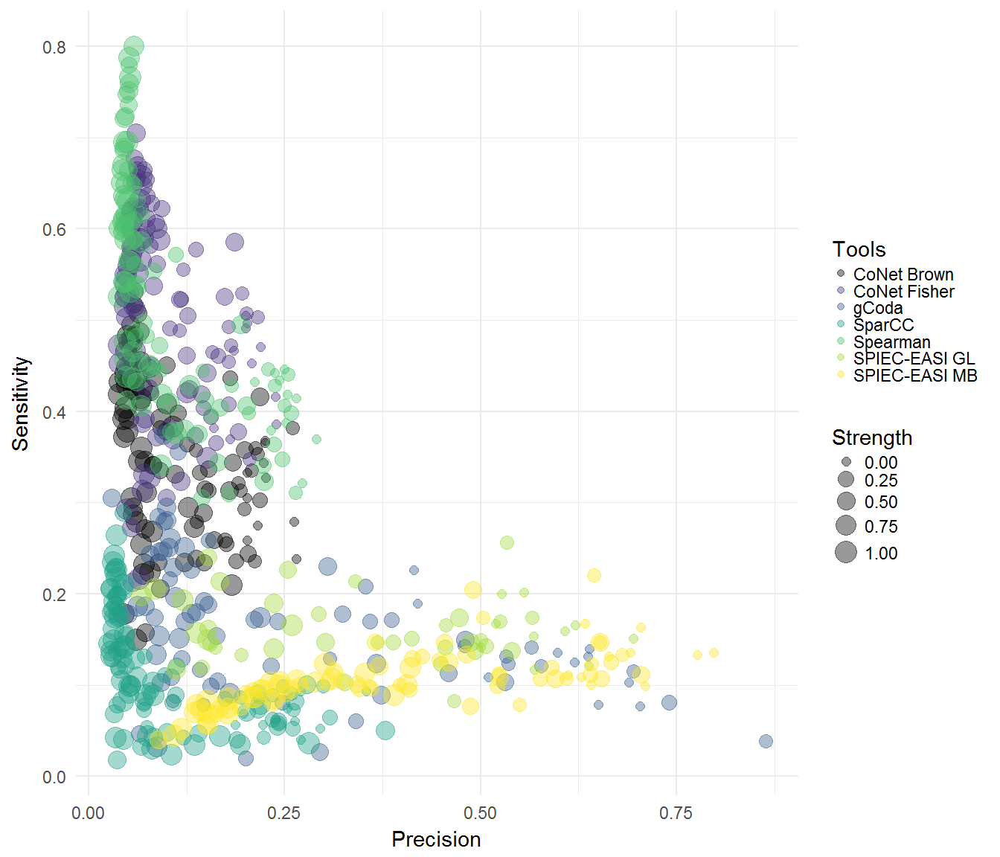
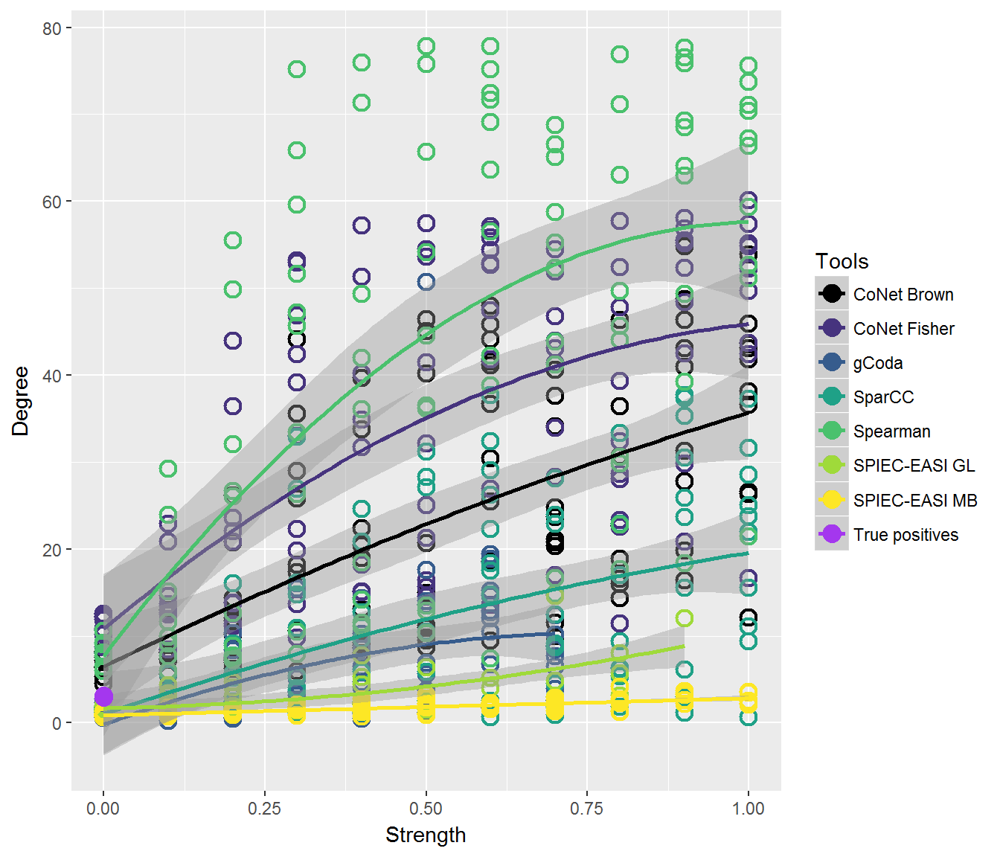

In this simulation, we used the generalized Lotka-Volterra equation to generate these datasets. We included environmental factors in the equations, by adjusting the growth rates of microbes based on these factors. This can be used to simulate the effect of a heterogeneous environment on network inference, because the ground truth network is known.
Because these sections of code take a long time to run, we are visualizing data that is included in the “data” folder in this repository. However, the code below shows how it was generated.
n = 10
x = seq(from=0, to=1, by=0.1)
setname = "_env"
wdir="insertfilepath" # Needs to be supplied for the other sections of code to restore your filepath
setwd(wdir)
allklemm = NetworkUtils::generateKlemms(10, 100, 10, 0.05) # the generateKlemms function has two outputs:
klemms = allklemm[[1]] # a matrix with interaction strengths, used to generate datasets
klemmadj=allklemm[[2]] # an adjacency matrix, used to evaluate inferred networks
# This function generates the datasets, and stores all values generated by the envGrowthChanges function
envdata = generateSets(n=n, klemms=klemms, species=100, samples=80, x=x, mode="env", name=set1)
# We ran CoNet and SparCC from a VM; make sure you set the working directory correctly before using writeSets or writeFeatures
writeSets(n, x, envdata)
# CoNet can use these features in network construction. This is analogous to measuring the pH or temperature and including it as features in CoNet's network inference.
edges = readRDS("_env_replication_envfactors.rds")
writeFeatures(n, x, edges)Just like before, we are not running this code; especially gCoda can take a long time to run when environmental strength becomes greater. The results are in the “data/Environmental factor networks” folder. The callTools function wraps several network inference tools that can be called from R and stores the output to the current working directory. For CoNet and SparCC, we used virtual machines. The bash scripts to run these tools are also included in the “data” folder.
# This function runs network inference and analyses the inferred networks
callTools(envdata, klemmadj, toolnames=c("SpiecEasi GL", "SpiecEasi MB", "gCoda", "Spearman"), setname, x, n, absolute = TRUE, mode="env")
# After running bashscript_CoNet.bash, this function can be used to parse the CoNet output
readCoNet(name="brown", x=x, n=n, alldata=envdata, setname, tool="CoNet Brown", klemmadj=klemmadj, wdir=wdir, absolute=TRUE)
# The factors add 2 columns and rows to the adjacency matrix, which need to be stripped
conetbrown <- readRDS('path to file generated with readCoNet')
for (i in 1:11){
for (j in 1:10){
conetbrown[[i]][[j]] = conetbrown[[i]][[j]][1:100,1:100]
}
}
# The stripped networks can be supplied to analyseOutput
analyseOutput(conetbrown, klemmadj, tool="brown", setname, x, n, absolute = TRUE, alldata=envdata)
# SparCC also needs to be read into an adjacency matrix
readSpar(n=n, x=x, alldata=envdata, mode="env", setname, klemmadj, wdir=wdir)The results can be visualized using the functions in this package. We load the result files from the data folder.
library("ggplot2")
#> Warning: package 'ggplot2' was built under R version 3.4.3
library("NetworkUtils")
library("SuperExactTest")
#> Warning: package 'SuperExactTest' was built under R version 3.4.3
#> Loading required package: grid
#>
#> Attaching package: 'SuperExactTest'
#> The following object is masked from 'package:igraph':
#>
#> union
#> The following objects are masked from 'package:base':
#>
#> intersect, union
library("viridis")
#> Warning: package 'viridis' was built under R version 3.4.3
#> Loading required package: viridisLite
col1 = viridis(8)
col1[4] = "#A437EE"
col1[1] = "#000000"
col2 = c(col1[1:3], col1[5:8])
col1 = c(col1[1:3], col1[5:8], col1[4])
col3 = c("#A437EE", col2)
n = 10
x = seq(from=0, to=1, by=0.1)
spiecmb = readRDS("../../data/Environmental factor networks/SPIEC-EASI MB_env_results.rds")
spiecgl = readRDS("../../data/Environmental factor networks/SPIEC-EASI GL_env_results.rds")
spear = readRDS("../../data/Environmental factor networks/Spearman_env_results.rds")
spar = readRDS("../../data/Environmental factor networks/SparCC_env_results.rds")
coda = readRDS("../../data/Environmental factor networks/gCoda_env_results.rds")
fisher = readRDS("../../data/Environmental factor networks/CoNet Fisher_env_results.rds")
brown = readRDS("../../data/Environmental factor networks/CoNet Brown_env_results.rds")
klemmspecs = readRDS("../../data/klemmspecs.rds")
results = list(brown, fisher, coda, spar, spear, spiecgl, spiecmb)
tools = c("CoNet Brown", "CoNet Fisher", "gCoda","SparCC", "Spearman", "SPIEC-EASI GL", "SPIEC-EASI MB")
plotPrecisionvsRecall(results, tools, x, colours=col2, mode="env")
#> Warning: Removed 119 rows containing missing values (geom_point).
plotSeries(results, klemmspecs, tools, x, "Degree", axis="Strength", mode="quadratic", colours = col1)
#> Warning: Removed 119 rows containing non-finite values (stat_smooth).
#> Warning: Removed 119 rows containing missing values (geom_point).